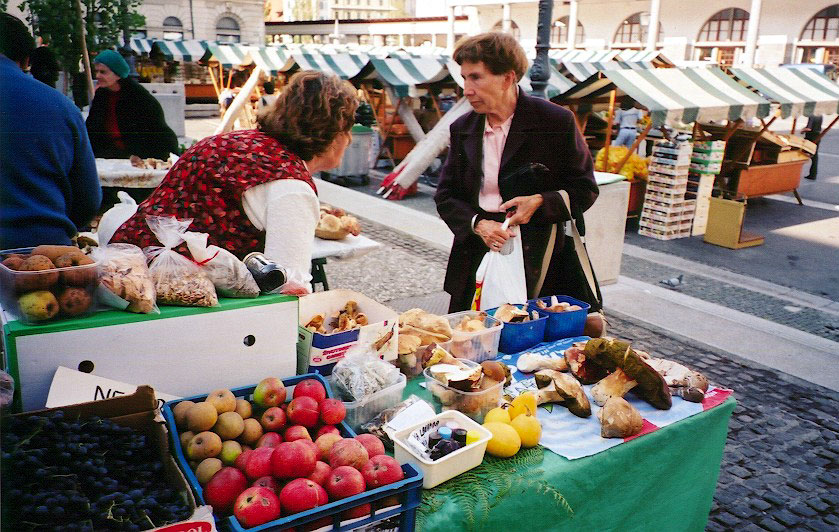
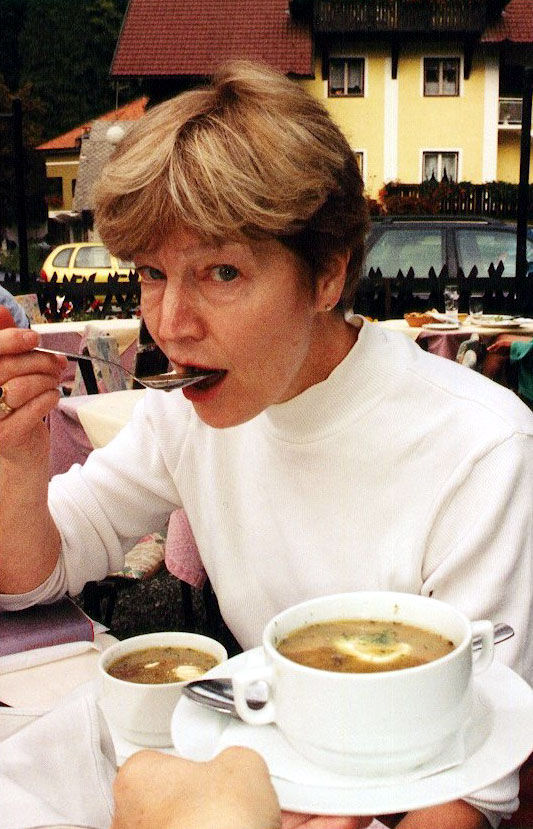

Click HERE to register your comments......or improve the recipe.Or do you want to take another look at the homepage MENU?
Or do you want to SEARCH for something specific?
Or do you want to take another look at the homepage MENU?
Or do you want to SEARCH for something specific?

Juha z Gobemi
(Slovenian mushroom soup)
This recipe makes a soup that is just as fabulous as I remember it during my travels throughout Slovenia--intensely rich and woodsy from thick wild mushrooms...and these are spiced with marjoram, given body from the potato, aromatically counterpointed with the wine or wine vinegar, and set off with the cool creaminess of a sour cream garnish spooned in at the end. Really, an incredible treat. Many many thanks to chef and cookbook king, Mick Vann, in Austin, Texas, for the recipe. Serve hot as a first course in small bowls to 4 people. Or, if you're feeling piggish, you can eat the whole pot as a one-man meal.
- 4-5 Tablespoons butter
- 1 small onion, finely chopped
- 1 Tablespoon flour
- 1/2 teaspoon garlic, minced
- 1 pound wild mushrooms, cut into chunks (ideally bolete or other meaty mushrooms, but if you don't have access to these you can substitute a combination of 1/2 pound store-bought mushrooms with 3 Tablespoons crumbled dried mushrooms that have been soaked in warm milk for at least 20 minutes--reserving the soaking liquid for some other recipe)
- 1 large potato, peeled and sliced into small cubes
- 3 cups warm water
- 2 bay leaves
- 1/2 teaspoon freshly ground black pepper
- pinch of marjoram (or oregano)
- 1/2 teaspoon garlic, minced
- 1/2 cup semi-dry white wine (ideally, a traminec or true rizling) OR 1 Tablespoon of wine vinegar
- salt to taste
Garnish: 2 Tablespoons minced parsley and dollops of sour cream
Melt the butter in a large saucepan and cook the onions until they are transparent. Stir in the flour and 1/2 teaspoon garlic, and cook til frothy, about 30 seconds. Stir in the mushrooms (either fresh chunks, or a combination of fresh chunks and rehydrated mushroom bits). Pour in the water, bay leaves, pepper, and marjoram (this last, crumbled between your palms). Bring to a simmer, then cook on low for about 10 minutes, stir in another 1/2 teaspoon of garlic, then continue cooking for 5 minutes, until the potatoes are tender--stirring frequently.
When the potatoes are cooked, stir in the wine or wine vinegar. Salt to taste. When ready to serve, ladle into small bowls, sprinkle each with parsley, and spoon a dollop of sour cream into the middle of each bowl.